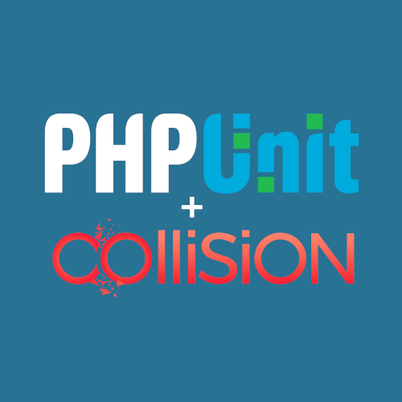
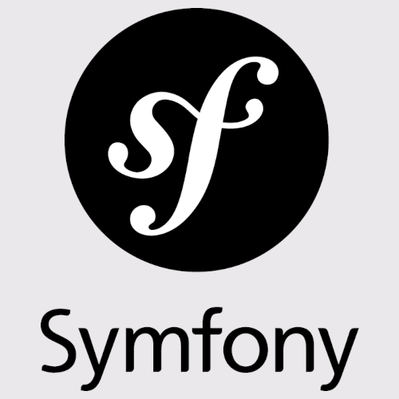
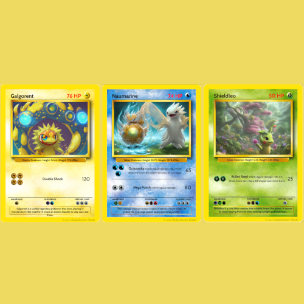
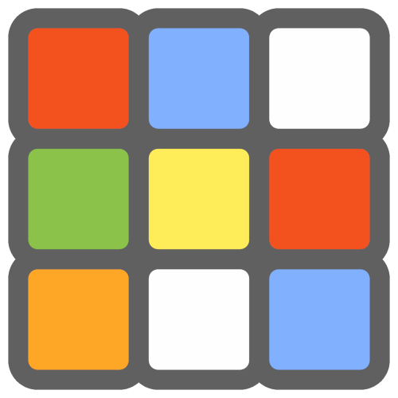

Recent writing

Dreeve v5.0: a self-hosted solution beyond Strava

WindAhead, weather and wind analysis for cycling and running routes

Adding intensity to zone 2: my weekly Zwift training plan

Embracing immutability in PHP 8.5 with the new clone() method

One year of Statistics for Strava

The power of Symfony’s service container

There’s no place like 127.0.0.1

Strategy Pattern: Because Your Giant if Statement is Crying for Help
Open source
dreeve
Dreeve is a self-hosted, open-source dashboard for your sports and fitness data
2,166wind-ahead
A weather and wind analysis tool for your cycling and running routes
22
phpunit-pretty-print
Better PHPUnit CLI output with Collision
77phpunit-coverage-tools
A PHPUnit extension to enforce minimum code coverage by using the clover XML report
17
symfony-skeleton
A Symfony skeleton I use to bootstrap new projects
2php-slim-skeleton
An event-driven Slim 4 Framework skeleton using AMQP and CQRS
47
pokemon-card-generator
A PHP app that generates Pokemon cards by using GPT and Stable Diffusion.
88
wca-rest-api
Unofficial World Cube Association (WCA) Public API
26medium-rss-github
Add Your Recently Published Medium Articles to Your GitHub Readme
1docker-browsershot
A docker container that allows you to use the Spatie\Browsershot package
11google-spreadsheets-improved-query
Use column names in Google Spreadsheets QUERY()
0playstation-easy-platinums
This repository is a collection of easy and quick obtainable PlayStation platinum trophies
13drupal-amqp-rabbitmq
This repository aims to illustrate how to set up AMQP within Drupal
6